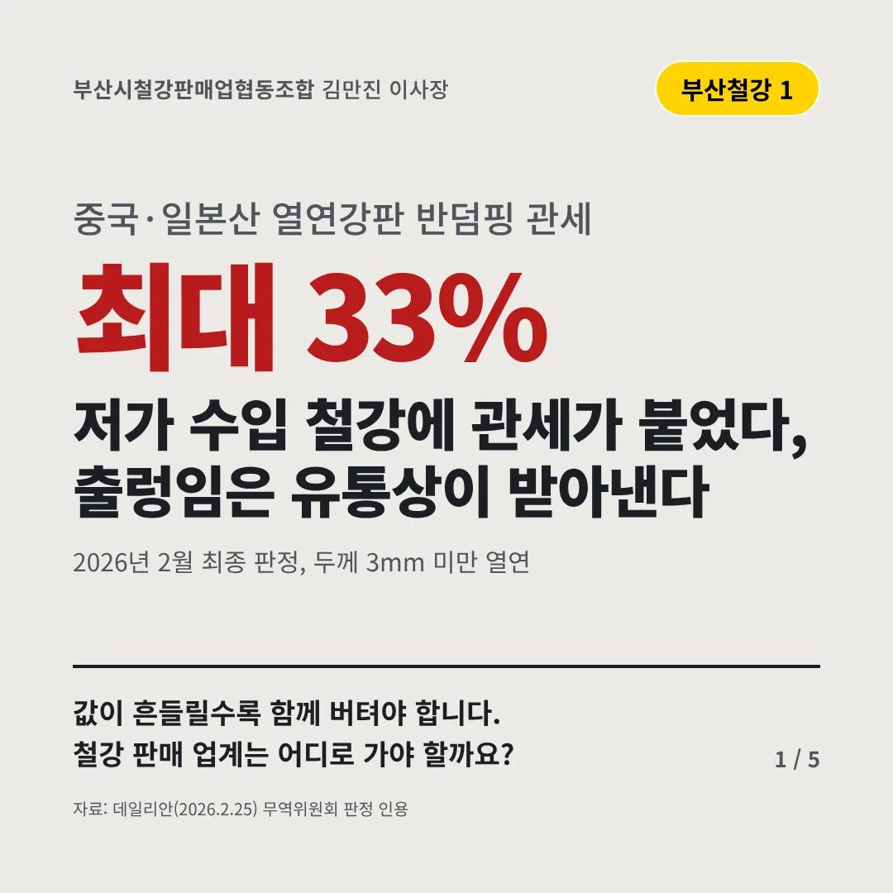
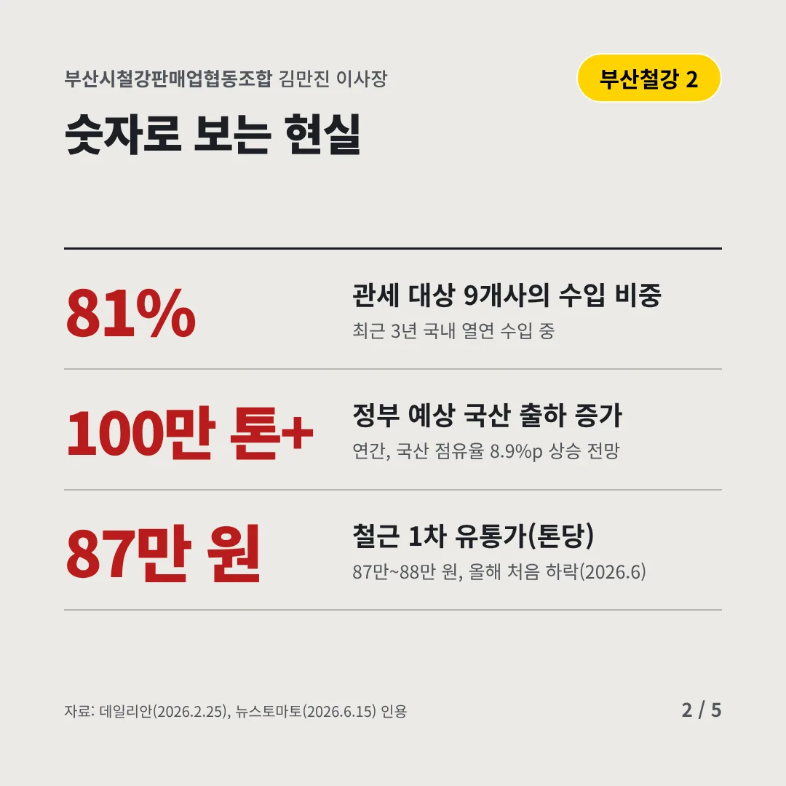
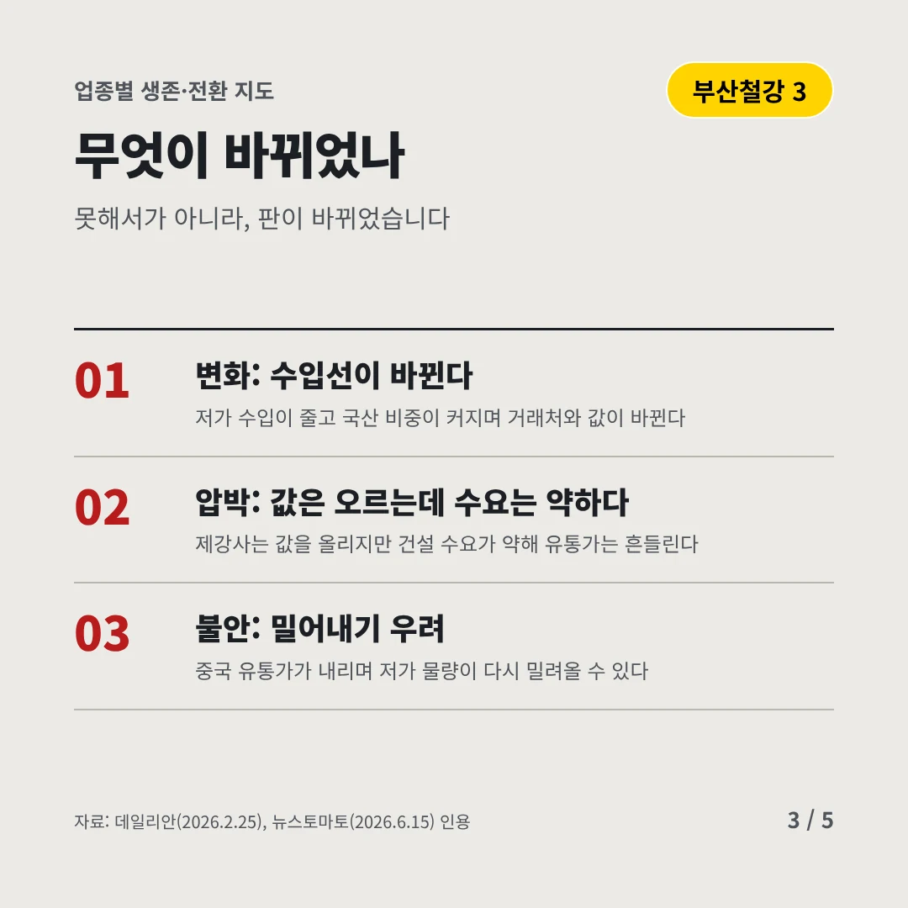
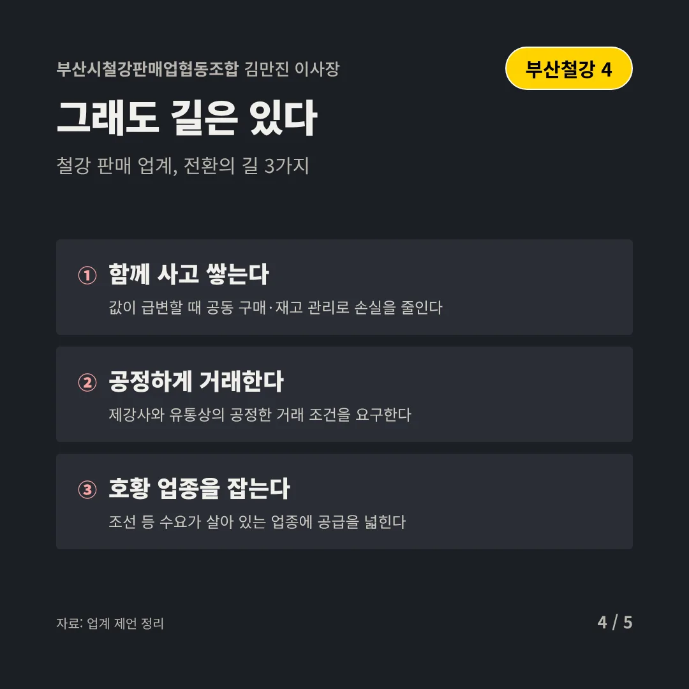
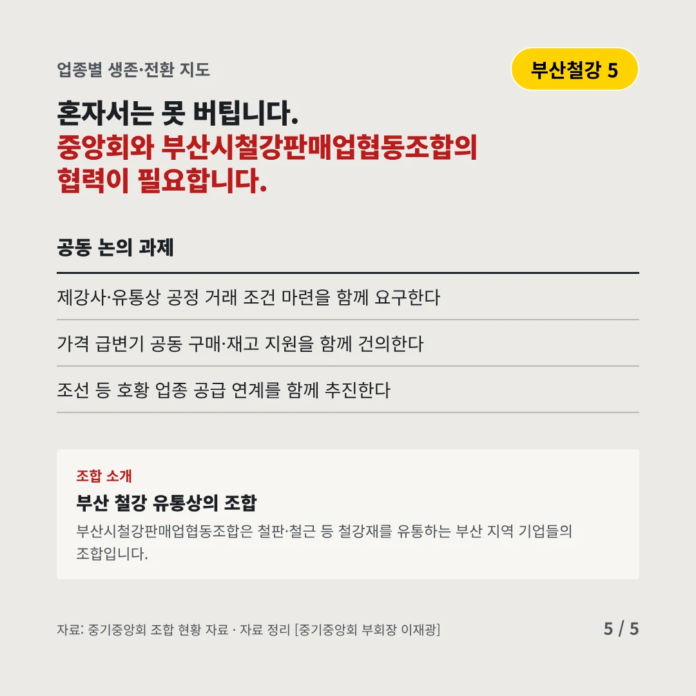
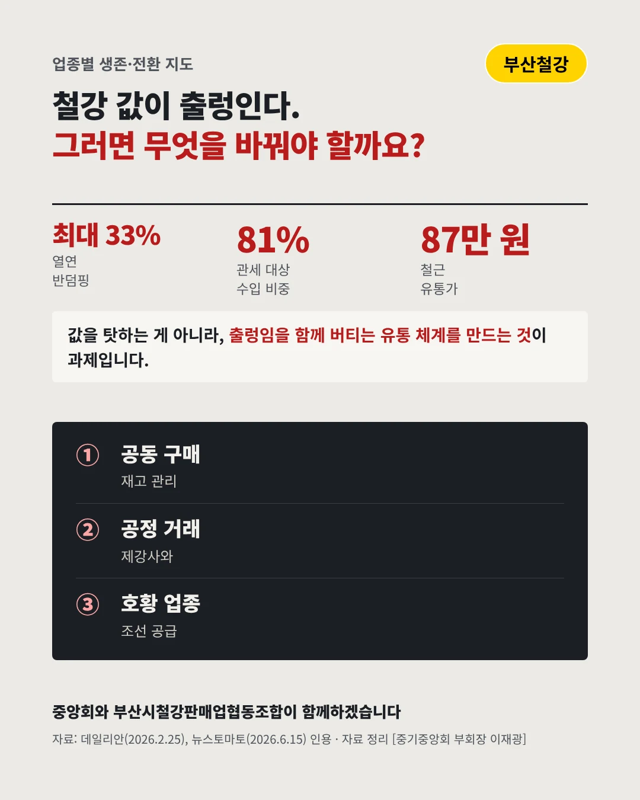

부산시철강판매업협동조합김만진 이사장
저가 수입 철강에 관세가 붙었다, 출렁임은 유통상이 받아낸다
최대 33% 중국·일본산 열연강판 반덤핑 관세






값이 흔들릴수록 함께 버텨야 합니다. 철강 판매 업계는 어디로 가야 할까요?
숫자로 보는 현실
- 81%관세 대상 9개사의 수입 비중최근 3년 국내 열연 수입 중
- 100만 톤+정부 예상 국산 출하 증가연간, 국산 점유율 8.9%p 상승 전망
- 87만 원철근 1차 유통가(톤당)87만~88만 원, 올해 처음 하락(2026.6)
무엇이 바뀌었나
- 변화: 수입선이 바뀐다저가 수입이 줄고 국산 비중이 커지며 거래처와 값이 바뀐다
- 압박: 값은 오르는데 수요는 약하다제강사는 값을 올리지만 건설 수요가 약해 유통가는 흔들린다
- 불안: 밀어내기 우려중국 유통가가 내리며 저가 물량이 다시 밀려올 수 있다
그래도 길은 있다
- 함께 사고 쌓는다값이 급변할 때 공동 구매·재고 관리로 손실을 줄인다
- 공정하게 거래한다제강사와 유통상의 공정한 거래 조건을 요구한다
- 호황 업종을 잡는다조선 등 수요가 살아 있는 업종에 공급을 넓힌다
한 장 요약

조합 소개
부산시철강판매업협동조합은 철판·철근 등 철강재를 유통하는 부산 지역 기업들의 조합입니다.
자료: 데일리안(2026.2.25), 뉴스토마토(2026.6.15)